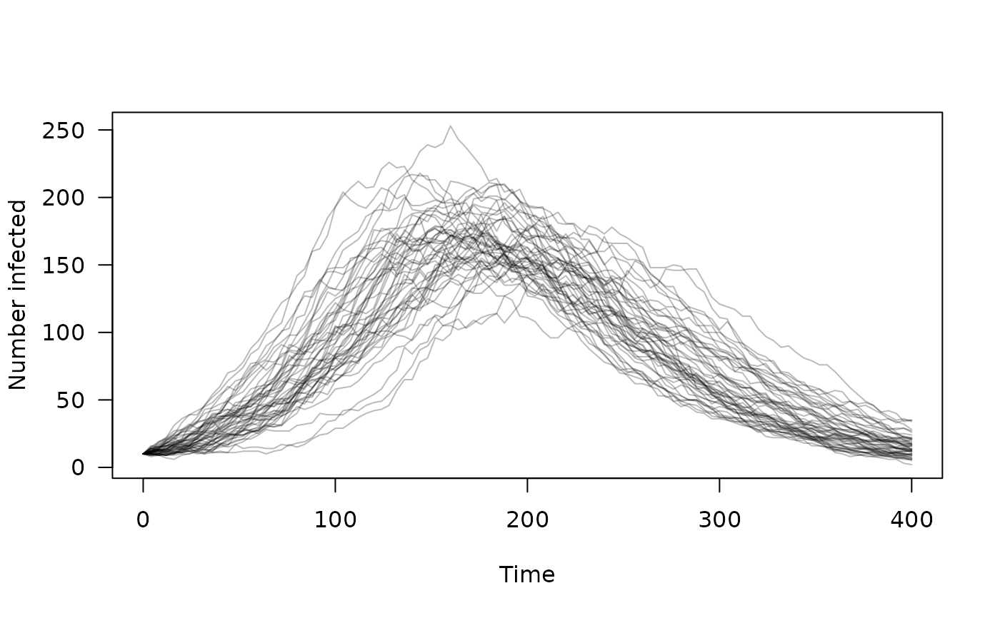

Access dust's built-in examples. These are compiled into the
package so that examples and tests can be run more quickly without
having to compile code directly via dust(). These examples are
all "toy" examples, being small and fast to run.
dust_example(name)A dust_generator object that can be used to create a
model. See examples for usage.
sir: a basic SIR (Susceptible, Infected, Resistant)
epidemiological model. Draws from the binomial distribution to
update the population between each time step.
sirs: an SIRS model, the SIR model with an added R->S transition.
This has a non-zero steady state, so can be run indefinitely for testing.
volatility: A volatility model that might be applied to
currency fluctuations etc.
walk: A 1D random walk, following a Gaussian distribution each
time step.
logistic: Logistic growth in continuous time
# A SIR (Susceptible, Infected, Resistant) epidemiological model
sir <- dust::dust_example("sir")
sir
#> <dust> object generator
#> Public:
#> initialize: function (pars, time, n_particles, n_threads = 1L, seed = NULL,
#> name: function ()
#> param: function ()
#> run: function (time_end)
#> simulate: function (time_end)
#> run_adjoint: function ()
#> set_index: function (index)
#> index: function ()
#> ode_control: function ()
#> ode_statistics: function ()
#> n_threads: function ()
#> n_state: function ()
#> n_particles: function ()
#> n_particles_each: function ()
#> shape: function ()
#> update_state: function (pars = NULL, state = NULL, time = NULL, set_initial_state = NULL,
#> state: function (index = NULL)
#> time: function ()
#> set_stochastic_schedule: function (time)
#> reorder: function (index)
#> resample: function (weights)
#> info: function ()
#> pars: function ()
#> rng_state: function (first_only = FALSE, last_only = FALSE)
#> set_rng_state: function (rng_state)
#> has_openmp: function ()
#> has_gpu_support: function (fake_gpu = FALSE)
#> has_compare: function ()
#> real_size: function ()
#> time_type: function ()
#> rng_algorithm: function ()
#> uses_gpu: function (fake_gpu = FALSE)
#> n_pars: function ()
#> set_n_threads: function (n_threads)
#> set_data: function (data, shared = FALSE)
#> compare_data: function ()
#> filter: function (time_end = NULL, save_trajectories = FALSE, time_snapshot = NULL,
#> gpu_info: function ()
#> Private:
#> pars_: NULL
#> pars_multi_: NULL
#> index_: NULL
#> info_: NULL
#> n_threads_: NULL
#> n_particles_: NULL
#> n_particles_each_: NULL
#> shape_: NULL
#> ptr_: NULL
#> gpu_config_: NULL
#> ode_control_: NULL
#> methods_: NULL
#> param_: list
#> reload_: NULL
#> Parent env: <environment: namespace:dust>
#> Locked objects: TRUE
#> Locked class: FALSE
#> Portable: TRUE
# Initialise the model at time step 0 with 50 independent trajectories
mod <- sir$new(list(), 0, 50)
# Run the model for 400 steps, collecting "infected" every 4th time step
times <- seq(0, 400, by = 4)
mod$set_index(2L)
y <- mod$simulate(times)
# A plot of our epidemic
matplot(times, t(drop(y)), type = "l", lty = 1, col = "#00000044",
las = 1, xlab = "Time", ylab = "Number infected")
